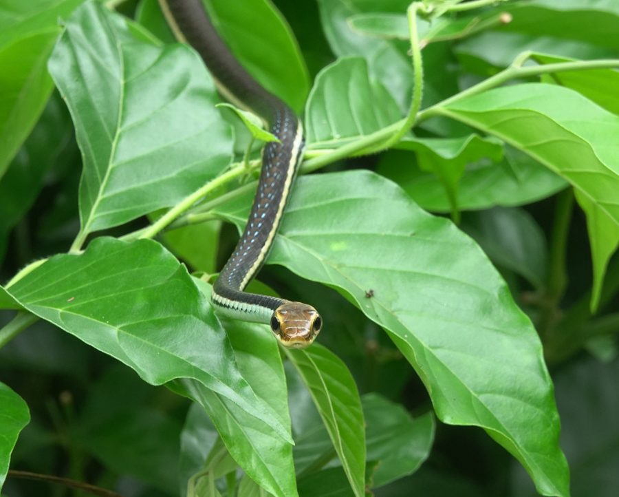

उत्तरी ब्रॉन्जबैकNorthern Bronzeback
Dendrelaphis proarchos · Colubridae · REP-0054

- Scientific name वैज्ञानिक नाम
- Dendrelaphis proarchos Wall, 1909
- Family कुल
- Colubridae
- Hindi हिंदी
- उत्तरी ब्रॉन्जबैक
- Local names स्थानीय नाम
- northern bronzeback, northern bronzeback tree snake, bronzeback, peed saamp
- Status here यहाँ की स्थिति
- native
- Movement आवागमन
- Resident, here all year
- Known from कहाँ दर्ज
- Others have published records from the wider Awadh–Purvanchal plain, none yet from Basti–Ayodhya अवध–पूर्वांचल से दूसरों के प्रकाशित अभिलेख, बस्ती–अयोध्या से अभी नहीं
- IUCN IUCN
- not evaluated
- Review समीक्षा
- not yet reviewed
When to look कब देखें
Present all year. साल भर मौजूद।
Tell it apart from इनसे अलग पहचानें
उत्तरी ब्रॉन्जबैक / Northern Bronzeback
Dendrelaphis proarchos Wall, 1909 — Colubridae
उत्तरी ब्रॉन्जबैक — यह पेड़ों और झाड़ियों पर रहने वाला एक अत्यंत फुर्तीला, पतला और विषहीन सांप है। इसकी पीठ का रंग चमकदार तांबे जैसा भूरा होता है और आंखों के पीछे से एक गहरी काली लकीर गर्दन तक जाती है। जब यह उत्तेजित होता है तो इसके शल्कों के बीच की त्वचा चमकदार नीले या आसमानी रंग की दिखने लगती है। यह दिन के समय पेड़ों पर चढ़कर गिरगिटों, छिपकलियों और छोटे पक्षियों का शिकार करता है।
Quick Identification त्वरित पहचान
| Feature | Description |
|---|---|
| Body size | Slender, elongated arboreal snake |
| Coloration | Rich bronze-brown above, with a prominent black temporal stripe extending from the eye onto the neck |
| Interstitial skin | Striking turquoise or bright powder-blue skin visible between the dorsal scales when inflated |
| Ventral scales | Pale greenish-white or yellowish, strongly notched and keeled laterally for vertical tree climbing (Smith 1943) |
| Eyes | Exceptionally large with golden irises and circular pupils, conferring acute diurnal vision |
| Tail | Very long, slender, tapering to a fine point, comprising roughly one-third of the total length |
Field tip: Scan sunlit bamboo clumps and the outer foliage of orchard trees during warm mid-morning hours.
हिंदी: यह कांसे जैसे भूरे रंग का पतला सांप है जिसके चेहरे पर आंख के पीछे काली पट्टी होती है और फूलने पर त्वचा नीली दिखती है। यह पेड़ों पर बहुत तेज दौड़ता है।
Morphology आकारिकी
The head is distinct, elongated, depressed, and sharply demarcated from the slender neck, with a flat snout and well-developed canthus rostralis. The eye is very large, longer than its distance from the nostril. Rostral is broader than deep. Frontal is longer than broad, about as long as its distance from the rostral. Supralabials number 9, with the fourth, fifth, and sixth entering the eye. Midbody scale rows count 15, with the vertebral row distinctly enlarged, hexagonal, and wider than adjacent costal scales (Smith 1943). Ventrals number 180 to 205, each possessing a sharp lateral keel and a distinct notch on each side corresponding to the keel. Subcaudals range from 120 to 155, all divided.
हिंदी: इसका सिर चपटा और लंबा होता है और आंखें काफी बड़ी होती हैं। पीठ पर 15 कतारों में शल्क होते हैं और रीढ़ के शल्क चौड़े होते हैं। पेट के शल्कों पर किनारे खांचेदार होते हैं।
Behaviour & Ecology व्यवहार और पारिस्थितिकी
The northern bronzeback is an agile, diurnal arboreal specialist of open woodlands, traditional fruit orchards, and dense hedgerows. It possesses extraordinary climbing and leaping capabilities; using its notched, keeled ventral scales to gain purchase on microscopic bark irregularities, it ascends vertical tree trunks with astonishing rapidity. It bridges broad gaps between branches by launching itself through the air, flattening its body slightly into a concave ribbon to parachuting-glide between canopy layers. When cornered, it inflates its neck and forebody vertically, exposing the dazzling turquoise interstitial skin as an aposematic startle display while darting with lightning speed into dense foliage.
हिंदी: यह दिन में सक्रिय रहने वाला पेड़ों का माहिर पर्वतारोही है। इसके पेट के शल्कों की बनावट ऐसी होती है जिससे यह सीधे तनों पर चढ़ जाती है और एक डाल से दूसरी डाल पर छलांग लगा सकती है।
Life Cycle / Phenology जीवन चक्र
Breeding occurs during the late spring and monsoon months from May to August. Males actively pursue females through tree branches. The species is oviparous; females deposit clutches of 4 to 8 elongated, cylindrical white eggs inside hollow branches, in epiphytic clumps, or within abandoned arboreal bird nests where moisture is retained (Whitaker & Captain 2004). Incubation requires approximately 45 to 60 days depending on ambient thermal conditions (Whitaker & Captain 2004). Hatchlings emerge measuring around 250 mm in total length and immediately take up an arboreal lifestyle among low shrubs.
हिंदी: गर्मियों और बारिश में इनका मिलन होता है। मादा पेड़ों की खोह या पुराने घोंसलों में 4 से 8 सफेद लंबे अंडे देती है। लगभग डेढ़ से दो महीने में अंडों से बच्चे बाहर आते हैं।
Host Plants or Prey आहार
The species is a specialized diurnal carnivore targeting arboreal vertebrates. Its primary prey consists of agamid lizards such as the Oriental Garden Lizard (Calotes versicolor) and arboreal geckos including Leschenault's Leaf-toed Gecko (Hemidactylus leschenaultii). It also captures tree frogs, skinks foraging in low bushes, and occasional small roosting birds or fledglings. With its acute stereoscopic vision, it tracks moving lizards from meters away before executing a rapid sprint and pinning the prey against tree limbs with its body coils.
हिंदी: इसका मुख्य भोजन पेड़ों पर रहने वाले गिरगिट, छिपकलियां और छोटे मेंढक हैं। यह बहुत तेज नजर से शिकार को देखती है और बिजली की तेजी से झपटकर पकड़ लेती है।
Predators / Natural Enemies शत्रु
Diurnal avian predators in Gangetic groves include raptors such as the Crested Serpent Eagle (Spilornis cheela) and Black Kite (Milvus migrans), which snatch active bronzebacks from outer canopy branches. Larger arboreal snakes such as Forsten's Cat Snake (Boiga forsteni) prey upon resting bronzebacks at night. Terrestrial predators like the Bengal Monitor (Varanus bengalensis) search lower branch forks for resting individuals.
हिंदी: चील और बड़े शिकारी पक्षी पेड़ों पर घूमते इस सांप को झपट लेते हैं। रात के समय बड़ा कैट स्नेक और गोह भी इसका शिकार कर सकते हैं।
Agricultural / Human Relevance कृषि प्रासंगिकता
In the fruit orchards of eastern Uttar Pradesh, this non-venomous tree snake provides beneficial ecological pest regulation by preying on large insects and maintaining natural balances in canopy vertebrate communities. It possesses no venom dangerous to humans and never bites unless forcefully restrained. Because of its swift speed and striking green-bronze coloration, it is occasionally misidentified as a green pit viper and killed needlessly. It is protected under the Wildlife (Protection) Act 1972.
हिंदी: यह आम और अमरूद के बागों में रहने वाला एक अत्यंत सुंदर और हानिरहित सांप है। इसमें कोई जहर नहीं होता और यह इंसानों को कभी नुकसान नहीं पहुंचाता। यह कानूनन संरक्षित है।
Expected Locally स्थानीय रूप से अपेक्षित
Not a field record. Written from published accounts for eastern Uttar Pradesh. No confirmed local sighting yet — if you have seen it, that is what the atlas needs.
अभी तक स्थानीय पुष्टि नहीं। यह विवरण प्रकाशित स्रोतों से है, किसी अवलोकन से नहीं।
In Basti and Ayodhya districts, optimal search localities include extensive mango orchards, dense bamboo brakes (baans ke jhurmut), garden hedges, and canal-side eucalyptus and shisham plantations. Searching sunny branch tips during sunny morning hours during warm pre-monsoon and monsoon months from April to September offers the greatest chance of an encounter. GBIF holds published records from the wider Awadh–Purvanchal plain, none yet from Basti–Ayodhya. A confirmed first record requires clear photographic documentation displaying the bronze dorsal coloration, black temporal stripe, and turquoise interstitial skin submitted to the project portal.
Distribution वितरण
Global range: Northern and northeastern Indian subcontinent, occurring across northern India, Nepal, Bhutan, Bangladesh, and Myanmar.
In India: Found across the Terai and Gangetic plains of Uttar Pradesh, Bihar, West Bengal, and the northeastern hill states.
In Uttar Pradesh: Recorded from forested tracts and mature orchard plantations across central, northern, and eastern districts.
In Basti district / eastern UP: Expected throughout the Kuwana, Bansi, and Ghaghara catchments in mature orchard and woodland habitats.
हिंदी: यह उत्तरी और पूर्वोत्तर भारत, नेपाल और बांग्लादेश के वनों में पाया जाता है। उत्तर प्रदेश के तराई और मैदानी बागों में इसकी उपस्थिति दर्ज है।
Research Questions शोध प्रश्न
- What are the primary tree species selected for foraging versus nocturnal sleeping retreats in traditional Awadh orchards? / अवध के बागों में यह सांप शिकार और रात में सोने के लिए किन पेड़ों को प्राथमिकता देता है?
- How does the presence of dense bamboo groves influence local population density and dispersal across agricultural lands? / घने बांस के झुरमुट इस सांप की आबादी और फैलाव को कैसे प्रभावित करते हैं?
- What is the success rate of predatory strikes on adult Oriental Garden Lizard in high canopy versus low shrub layers?
- How do high summer temperatures alter diurnal activity windows in Gangetic orchards?
- Can orchard owners be engaged through nature education to protect harmless tree snakes? / क्या बागबानों को इस फुर्तीले और हानिरहित सांप के संरक्षण के लिए प्रेरित किया जा सकता है?
Similar Species मिलती-जुलती प्रजातियाँ
| Species | How to tell apart | हिंदी | |
|---|---|---|---|
| Common Bronzeback Tree Snake \ | Dendrelaphis tristis | Possesses a distinct pale buff or yellowish-white vertebral stripe, smaller vertebral scales, and different scale counts (Smith 1943) | कॉमन ब्रॉन्जबैक की रीढ़ पर हल्की पीली पट्टी होती है और इसके शल्कों की गिनती अलग होती है |
| Common Trinket Snake \ | Coelognathus helena | Heavier terrestrial colubrid with two dark neck stripes, white-centered black anterior ocelli, and round pupils | तस्कर सांप का शरीर भारी होता है, गर्दन पर दो काली धारियां और आगे के शरीर पर सफेद आंखों जैसे धब्बे होते हैं |
| Oriental Garden Lizard \ | Calotes versicolor | Non-serpentine agamid lizard with four limbs, dry keeled scales, and dorsal crest | गिरगिट चार पैरों वाला जीव है जिसकी गर्दन पर कांटेदार कलगी होती है |
Field rule: Slender bronze tree snake with large golden eyes, dark temporal streak, and brilliant turquoise interstitial skin visible when inflated in orchard trees.
हिंदी: पेड़ों पर रहने वाला पतला कांसे जैसा सांप जिसकी आंख के पीछे काली पट्टी और फूलने पर त्वचा में नीली चमक होती है।
Taxonomy & Classification वर्गीकरण
Original description. Wall (1909), Notes on snakes from Assam, Journal of the Bombay Natural History Society, 19, p. 339; type locality: Dibrugarh, Assam, India.
Subspecies. Monotypic; previously treated as a synonym of Dendrelaphis pictus, but revalidated as a distinct species based on morphological and molecular revisions.
Family and order placement. Placed in the genus Dendrelaphis Fitzinger, 1843, family Colubridae, subfamily Ahaetuliinae, order Squamata.
Phylogenetic notes. Belongs to the Dendrelaphis pictus species complex, representing the northern and northeastern continental lineage adapted to Indo-Gangetic riverine forests.
IUCN status rationale. Not evaluated by the IUCN Red List; widely distributed across diverse forest and agricultural habitats in northern South Asia.
हिंदी: मेजर फ्रैंक वॉल ने 1909 में असम के डिब्रूगढ़ से इसका विवरण दिया था। यह कोलुब्रिडे कुल के डेंड्रेलाफिस वंश का सदस्य है।
Photo Gallery फोटो गैलरी
No photos yet — add field photos to media/species/northern_bronzeback/ and run node scripts/sync_photos.js.
Photos needed आवश्यक फोटो
- [ ] Habitat view showing typical local microhabitat (प्राकृतिक वास का विस्तृत परिदृश्य)
- [ ] Profile of head showing large golden eye and dark temporal streak (सिर का दृश्य जिसमें बड़ी आंख और काली पट्टी दिखे)
- [ ] Defensive display showing inflated turquoise interstitial skin (उत्तेजित होने पर त्वचा की नीली चमक का दृश्य)
- [ ] Individual climbing gracefully among orchard branches (पेड़ की शाखाओं पर चढ़ता सांप)
References संदर्भ
- Original description: Wall, 1909 — see GBIF.
- Smith, M. A. (1943). The Fauna of British India, Ceylon and Burma, Including the Whole of the Indo-Chinese Sub-region. Reptilia and Amphibia. Vol. III.—Serpentes. Taylor and Francis, London.
- Whitaker, R. & Captain, A. (2004). Snakes of India: The Field Guide. Draco Books, Chengalpattu.
- GBIF Occurrence Data — Dendrelaphis proarchos, India (2025).
Source file: species/fauna/reptiles/northern_bronzeback.md